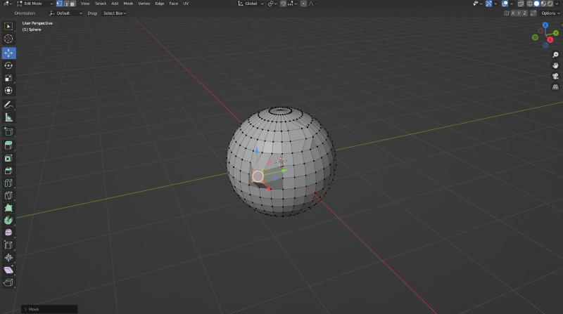
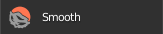
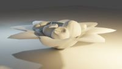

3D Sculpted Animation using Blender
What is 3D sculpting?
3D sculpting is the proces with which is done with a specific software,
that involves 3D artist manipulating polygon meshes
of objects similar
to actual sculptors. Using a material similar to clay (digitized), the
artists shape, stretch, and carve the object
using digital tools,
resulting in a high-quality render of a Computer Grpahics (CG) object.

Digital Tools
3D softwares make use of digital tools such as brushes and tools that
draw, smooth, snake hook, and grab which makes it easy
for the artist to create certain details that imitate real life
textures and objects.

Rendering a 3D sculpted model
A software which can do all that is mentioned above and outputs an
animation or image of the 3D model is the 3D software
known as
Blender.
Rendering refers to when a computer calculates the light within the
environment or scene that was created, in order to create
the final
image or animation. For the computer to calculate the lighting, the
render engine needs information from the scene,
such as:
- Geometry
- Materials
- Light setup
- Textures
- World background
However, these are only the basic information of what a render engine
needs. In our case keyframes were also created in the
animation timeline,
in which data of the 3D model from different camera views was stored, in
order to make the setup look
like it is turning upon a table once the
rendered animation is finalized.
Blender has two built in render engines which include:
- Eevee - a rasterized (fast) render engine
- Cycles - a raytraced render engine which is
much slower, however, it is more accurate and produces images
which are
based on how light bounces in real life.
Below we can see some examples of rendered images from different camera
views done through Blender.

Sources:
https://ufo3d.com/modeling-vs-sculpting-differences/
https://conceptartempire.com/what-is-3d-sculpting/
https://artisticrender.com/how-to-render-in-blender/
Go to top